스마트 도어락
납땜부터 앱까지 직접 만든 IoT 실물 제품입니다.
상장 보기
회로 납땜부터 서비스 배포까지 직접 해냅니다.
아이디어를 실물로 완성해 온 IT 프로덕트 기획자 박진한입니다.
지금은 MCPShield — AI 에이전트가 쓰는 도구의 안전성을
검증하는 보안 서비스를 만들고 있습니다.
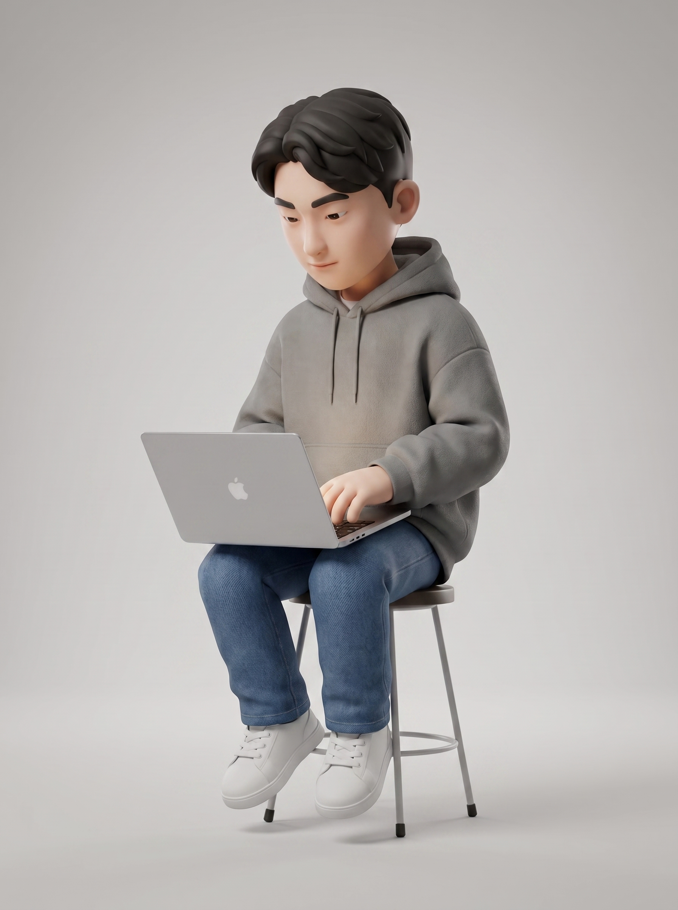
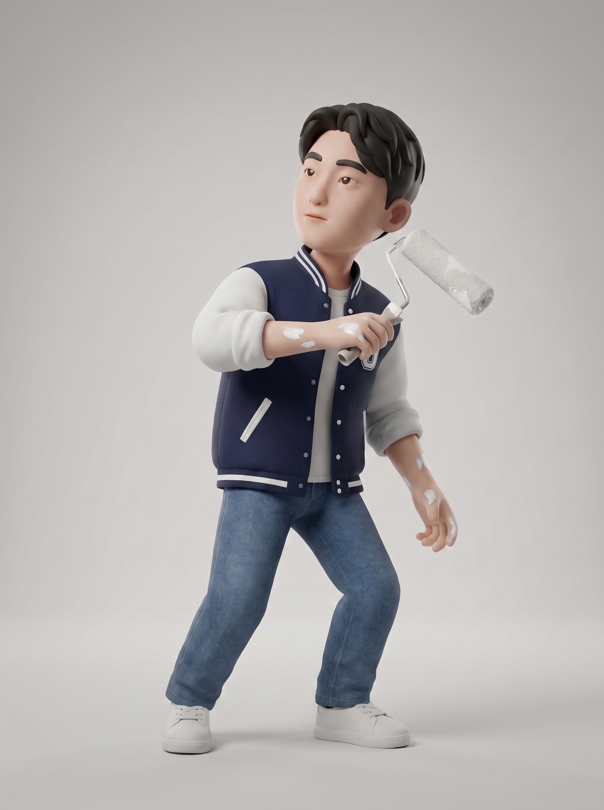
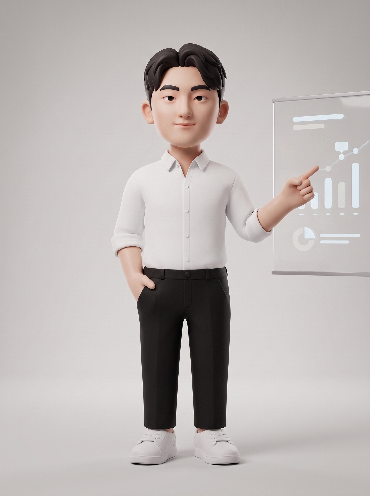
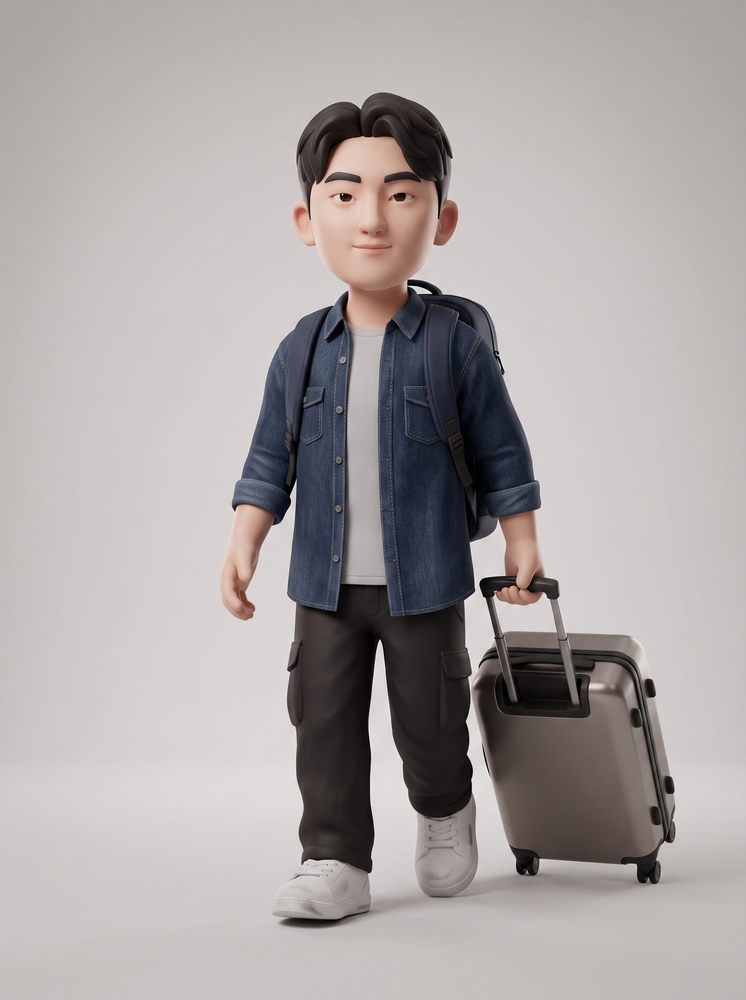
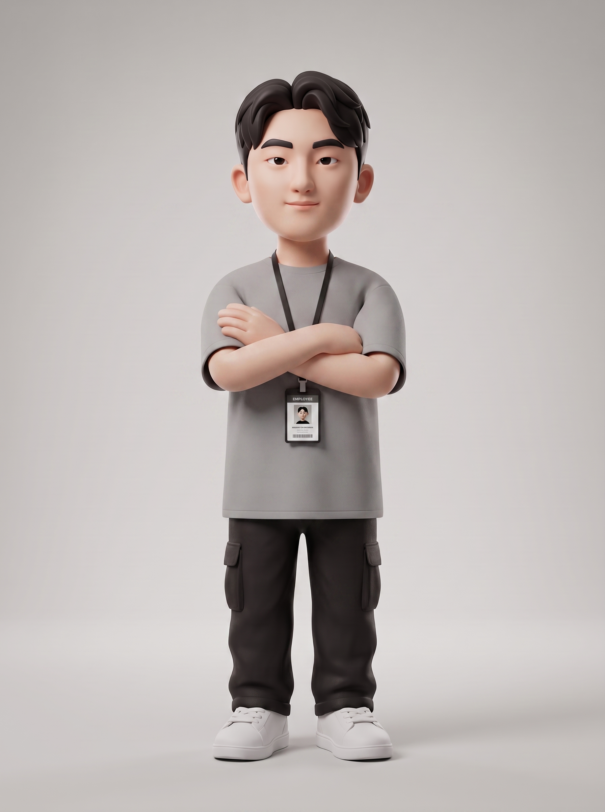
납땜부터 앱까지 직접 만든 IoT 실물 제품입니다.
상장 보기광주 공공데이터로 창업 입지를 분석하는 웹 서비스입니다.
상장 보기한국연구재단 이사장상과 상금 250만 원을 받았습니다.
수상 사진 보기전남대학교 총장이 직접 수여했습니다.
표창패 보기상장이 있는 항목은 눌러서 원본을 확인하실 수 있습니다.
2022년부터 지금까지, 제가 지나온 자리들입니다.
창업동아리 세미콜론에서 점프업 게임의 기획을 총괄했습니다. 동아리원을 캐릭터로 만들었고, 강의실을 배경에 그대로 옮겼고, 시험지와 과제를 장애물로 떨어뜨렸습니다.
동아리원들이 게임 속에서 자기 캐릭터를 찾아내며 웃었습니다.
총축제 콘텐츠팀장으로, 1,000원짜리 콘텐츠 여러 개를 직접 기획하고 만들고 섭외했습니다. 아이디어를 떠올리는 것부터 실제로 파는 것까지 전 과정을 맡아, 100만 원이 넘는 수익을 냈습니다.
같은 해 제54대 총학생회 소통혁신국장으로는 5.18 기념 AI 벽화를 기획했습니다. AI 초안부터 미술학과 섭외, 트러스 설치까지 끌고 가 36개 조각을 학생들의 손으로 완성했고, 광주광역시장상을 받았습니다.
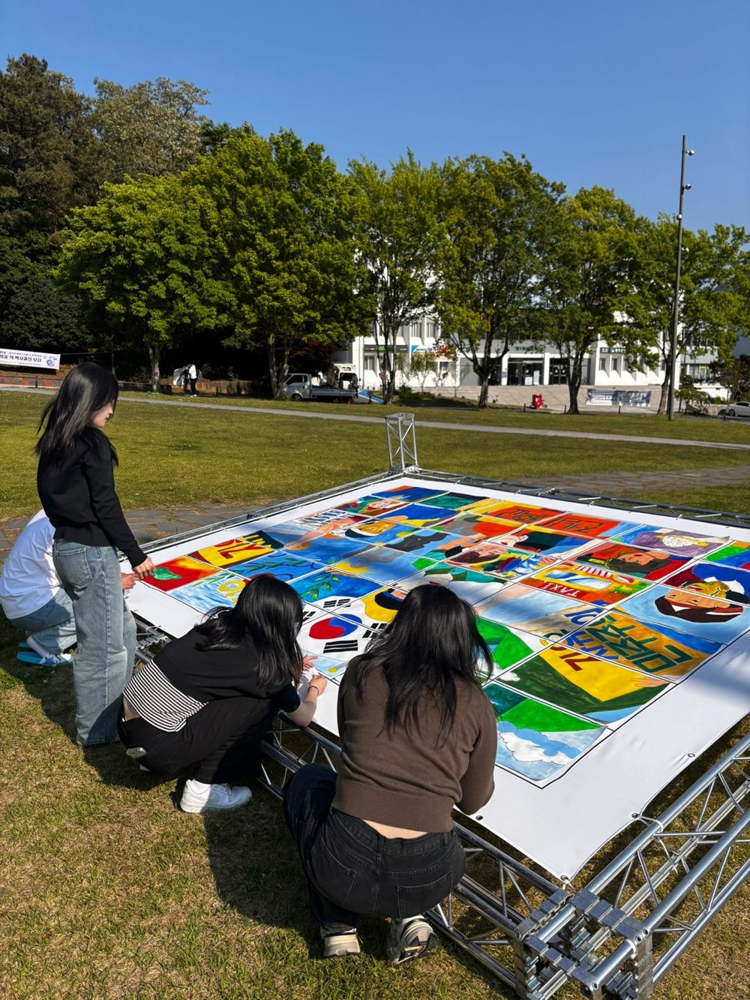
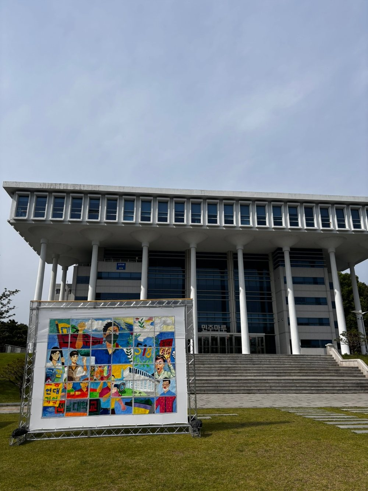
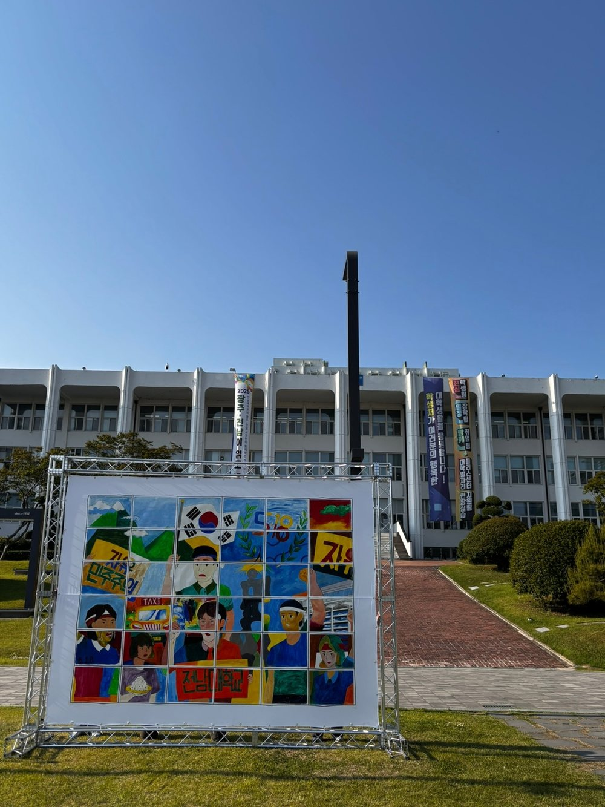
아이디어를 떠올리고, 만들고, 파는 것까지 — 전부 제 손을 거쳤습니다.
많은 창업이 아이템이 아니라 '자리'에서 갈립니다. 그런데 정작 필요한 정보는 광주시 여기저기에 흩어져 있었습니다. 그 데이터를 한곳에 모아, 어느 지역에 어떤 업종이 맞는지 분석했습니다.
분석에서 끝내지 않고, 예비 창업자가 그 자리에서 바로 상담까지 받을 수 있게 이어 붙였습니다. 이 서비스로 한국장학재단 이사장 특별상을 받았습니다.
데이터 분석의 끝을 예비 창업자의 상담 한 번으로 설계했습니다.
일본과 대만의 IT 기업 탐방은 누가 만들어 준 자리가 아닙니다. 현지 기업에 직접 메일을 보내 연계했고, 일정을 짜서 두 나라를 다녀왔습니다. 일본에서는 Cinnamon AI를, 대만에서는 iKala를 찾아갔습니다. 발로 뛰지 않았으면 없었을 경험입니다.
2026년 여름에는 현대자동차그룹 해피무브 글로벌 청년봉사단으로 인도네시아에 갔습니다. 기술이 사람에게 어떻게 가 닿는지, 화면 밖에서 보고 싶었습니다.
현지 학교에서 아이들과 벽을 칠하고 수업을 했습니다. 말이 하나도 통하지 않았습니다. 그런데 손짓과 그림으로 일이 굴러갔습니다. 무엇을 아는지보다 상대가 알아들었는지가 먼저였습니다.
기술도 같다고 생각합니다. 아무리 잘 만들어도 쓰는 사람이 알아듣지 못하면 거기서 끝입니다.
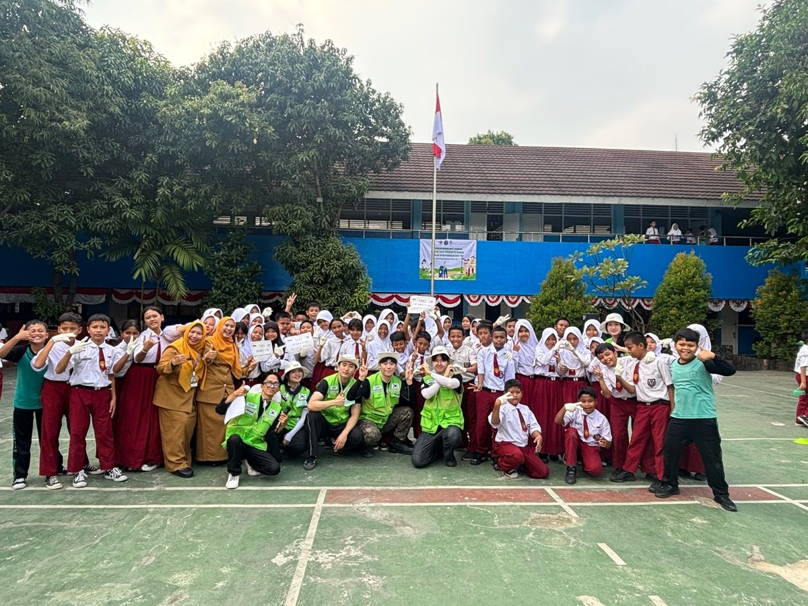
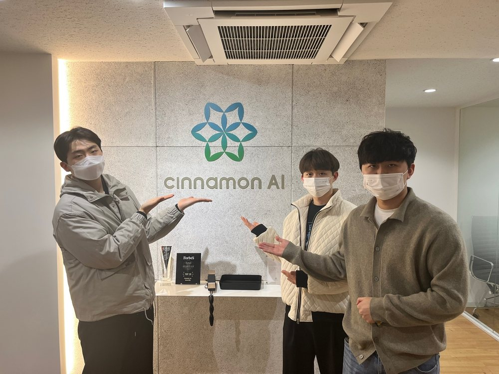
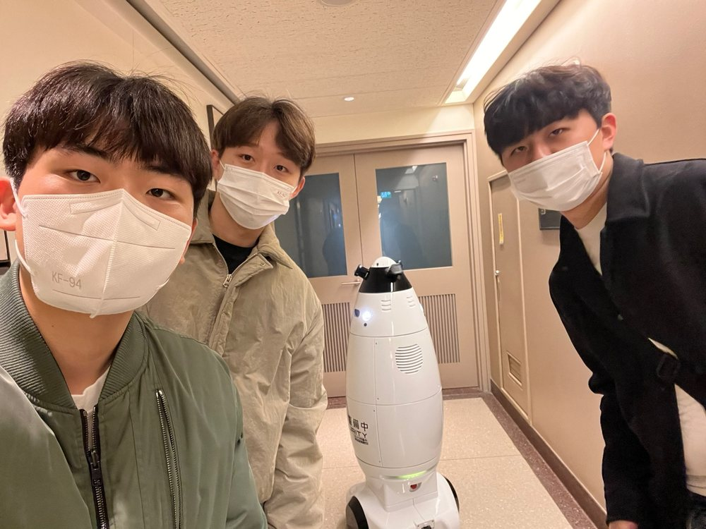
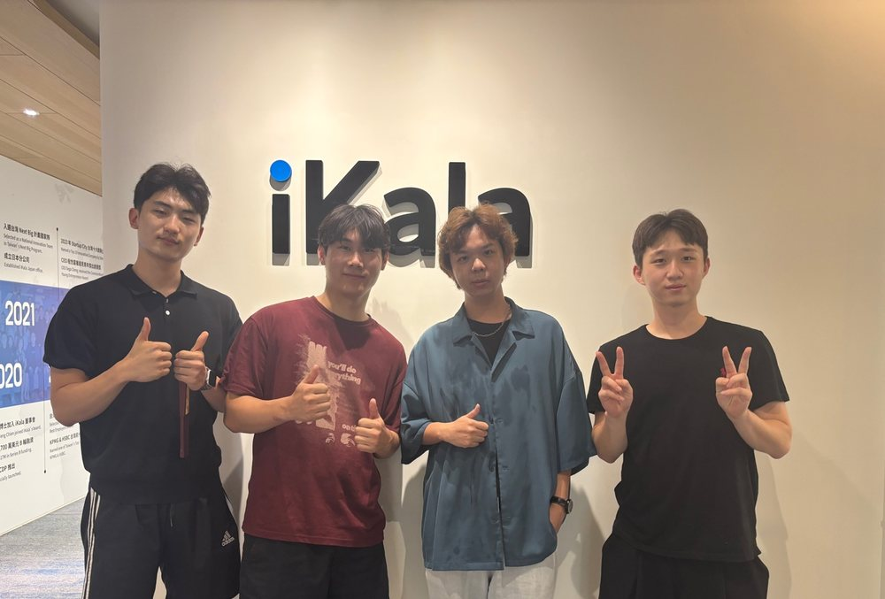
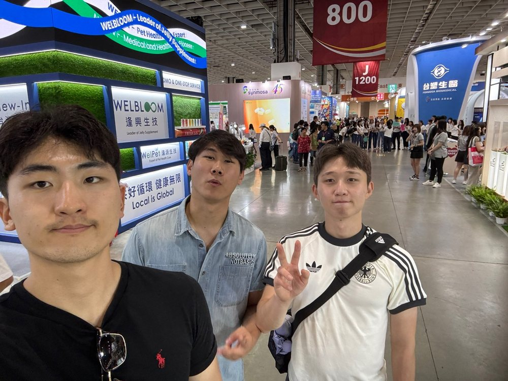
낯선 담당자의 답장 한 통이 프로그램 전체의 시작이었습니다.
㈜달구 백엔드 인턴으로 두 달을 보냈습니다. 회원 · 인증 · 게시판 REST API와 DB를 만들었고, Redis와 Kafka로 대용량 비동기 처리를 다뤘고, Docker · AWS · GitLab CI/CD로 배포 자동화를 구축했습니다.
학교에서 만든 것과 현업의 코드는 달랐습니다. 기능이 도는 것보다 장애가 났을 때 어디를 봐야 하는지가 먼저였고, 그 감각을 여기서 배웠습니다.
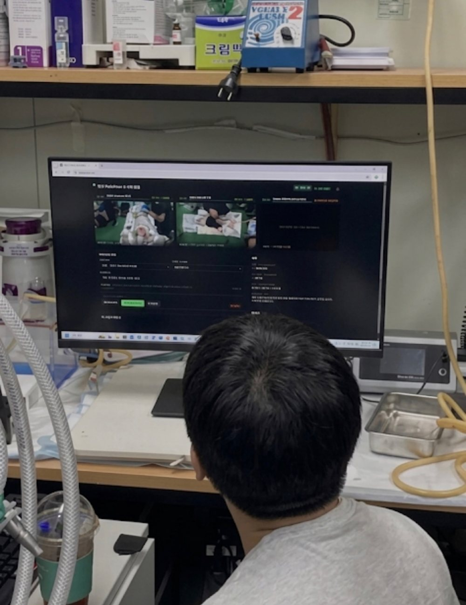
이 시스템의 끝에는 진단 결과를 기다리는 환자가 있습니다.
기업들이 AI 에이전트를 빠르게 들이고 있습니다. 그런데 그 AI가 쓰는 외부 도구가 업데이트 한 번에 고객정보나 비밀번호를 빼돌려도, 기존 보안으로는 알아채기 어렵습니다. 그래서 많은 기업이 보안이 무서워 도입을 미루거나, 위험을 모른 채 쓰고 있습니다.
MCPShield는 AI가 외부 도구를 실행하기 전에 그 도구가 위험한 행동을 하는지 검사하고, 위험하면 자동으로 막습니다. 위험한 도구를 탐지·차단하는 과정을 보여주는 데모까지 만들었습니다.
AI가 쓰는 외부 도구는 기존 보안의 사각지대입니다.
1차 — 금융 · IT · 고객지원 기업의 보안팀
2차 — 신뢰도를 증명해야 하는 AI 도구 개발사
기업 대상 구독형 보안 서비스 + 도구 개발사 대상 '안전 검증 인증'
개인정보 · AI 규제가 가장 엄격한 유럽 시장
다음 순서는 검증입니다. AI 에이전트를 실제로 쓰는 개발자와 기업 보안 담당자를 인터뷰해, 비용을 낼 만큼 절실한 문제인지 그리고 구매는 누가 결정하는지부터 확인하려 합니다.
보안 기술이기 전에, 직원과 고객이 AI를 안심하고 쓰게 만드는 '신뢰의 기술'입니다.
한 걸음씩, 더 깊이.
기획서 바깥에서 만든 결과물입니다. 카드뉴스부터 하드웨어까지 직접 제작했습니다.
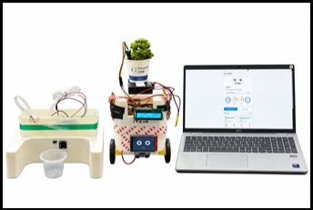
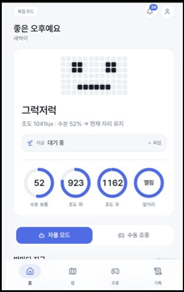
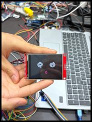
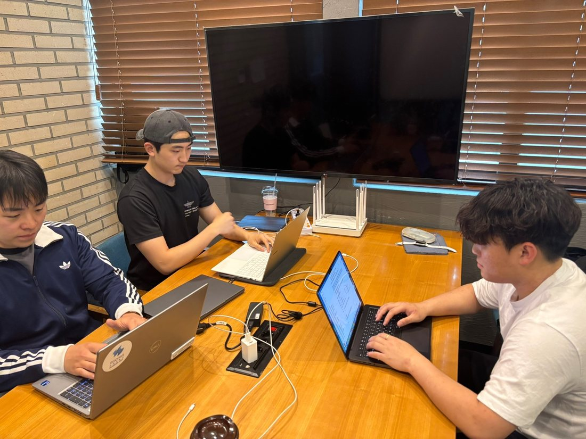
작년엔 제가 배우는 쪽이었습니다.
SW 교학상장 · 멘티에서 멘토로학생들의 손으로 36조각이 완성됐습니다.
5.18 기념 AI 벽화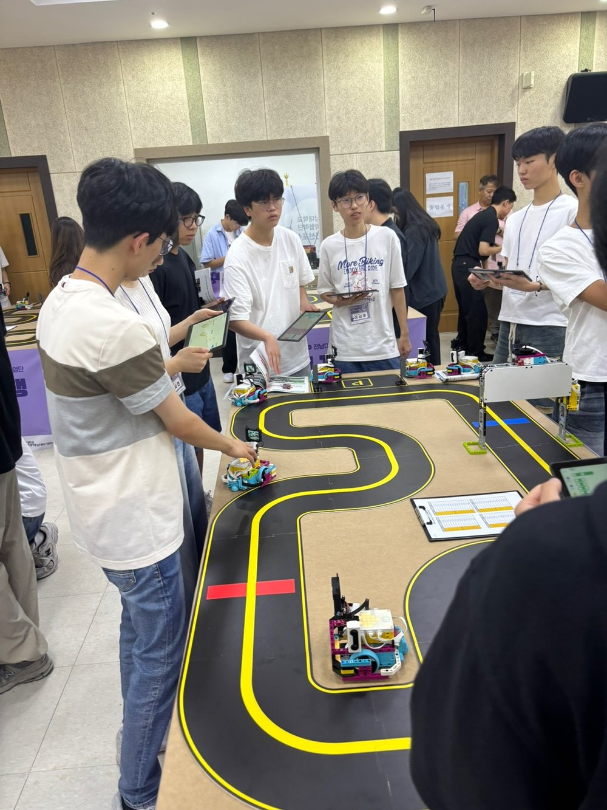
아이들이 첫 키트를 조립했습니다.
만들닷 메이커 교육말이 통하지 않아도 일은 굴러갔습니다.
현대자동차그룹 해피무브 · 인도네시아 2026개발자와 같은 언어로 말하기 위해, 하드웨어부터 백엔드까지 직접 만들었습니다.
현업에서 실제 제품이 만들어지고 배포되는 사이클을 겪어 봤습니다.
그리고 MCPShield로, 사람이 AI를 믿고 쓸 수 있게 만드는 문제를 붙잡고 있습니다. AI 에이전트 보안, 신뢰할 수 있는 AI와 거버넌스, 사람 중심 데이터(MyData), AI 리터러시 — 네 분야 모두 '사람이 기술을 믿고 쓸 수 있게 만든다'는 하나의 질문으로 이어집니다.
다음 판에서는 기술을 아는 기획으로, 팀이 만든 것이 사용자에게 닿는 순간까지 책임지겠습니다.
기술의 가치는 결국
사람에게서 나옵니다.